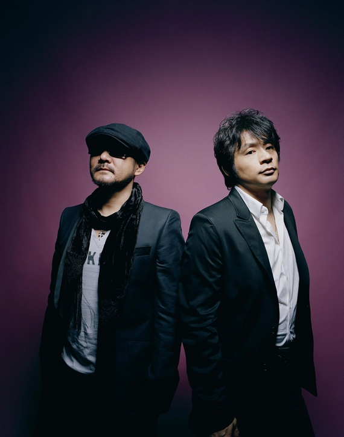

CHAGE & ASKA
MUSIC

CHAGE & ASKA
Timeless Voices, Eternal Melodies
DISCOGRAPHY
SAY YES
YAH YAH YAH
LOVE SONG
FULL DISCOGRAPHY (Wikipedia Structure)
すべての年
HISTORY
1979年
デビュー
1991年
SAY YES 大ヒット
1993年
YAH YAH YAH ミリオン
2007年
活動休止